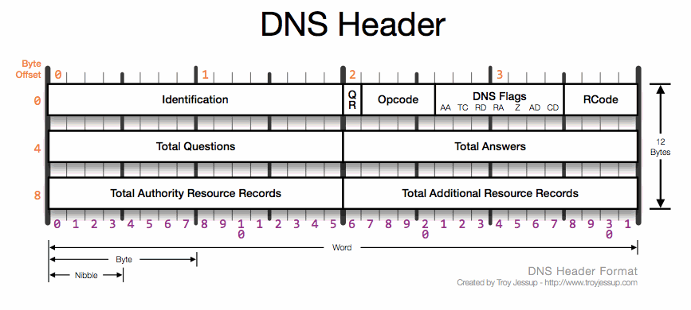

GoatNS
A rusty DNS name server.
Currently designed to be authoritative.
Though, "designed" is a stretch.
Configuration
Look at zones.json and goatns.json for examples.
Testing
Rust tests are run using cargo.
cargo test
A handy test tool is dnsblast. This'll run 50,000 "valid" queries, 1500 packets per second, to port 15353:
./dnsblast 127.0.0.1 50000 1500 15353
Or if you want to fuzz the server and test that it doesn't blow up:
./dnsblast fuzz 127.0.0.1 50000 1500 15353
Running in Docker
There's a dockerfile at ghcr.io/yaleman/goatns:latest and a docker-compose.yml file if that's your thing.
Supported request/record types
- A
- AAAA
-
AXFR
- add an allow-list in the config file (CIDRs)
- CAA
- CNAME
- HINFO
- LOC
- MAILB
- MB
- MD
- MF
- MG
- MINFO
- MR
- MX
- NAPTR
- NS
- PTR
- SOA
- TXT
- URI (RFC 7553)
- WKS
TODO
- record storage in a DB and caching instead of loading everything into memory
-
response caching to save the lookups and parsing
- concread?
- rewrite ttl handling so you don't have to specify it per-record and it uses zone data
- good e2e tests for LOC records from zone files
-
cleaner ctrl-c handling or shutdown in general
-
thinking I need to set up a broadcast tokio channel which the threads consume and shutdown from
-
datastorejust needs to know to write out anything it's working on at the time, which may need an internal state flag for "are we shutting down" so any new write transactions are rejected
-
-
thinking I need to set up a broadcast tokio channel which the threads consume and shutdown from
- maaaaybe support flattening of apex records?
- support all sorts of records with classes, because bleh
-
support VERSION/VERSION.BIND requests
- allow list config
- build the response packets in a nice way that doesn't blow up
Packet Header
These things are spicy.

Processing Packets
UDP Flow
sequenceDiagram
participant udpport as UDP Port
participant udpserver as udp_server
participant parsequery as parse_query
participant datastore as Data Store
udpport->>udpserver: Connect on port 15353
udpserver->>parsequery: Parse all the bytes into a Result Object
parsequery->>datastore: Command::Get for name/type
datastore->>parsequery: Respond with data
parsequery->>udpserver: Return Result Object
udpserver->>udpport: Send data to client
References
- dnslib has some good example data
- rfcs.io - DNS has links to all the main RFCs